制定日期：2026年8月17日
作者・权利人：Bienhime（老薛、薛哥、薛妈妈、セツさん随你称呼）
联系方式：xueraven666@gmail.com
X：@Bienhime
本规约旨在规定UTAU音源「コンペキノソラ（セツ・ソラ）［Retake-2026］」（以下简称“本音源”）的制作者与使用者之间，围绕本音源使用所产生的权利义务关系。
本规约适用于本音源的声音文件、原音设定、频率表、附带数据、角色设计以及角色设定等内容的使用。
如本规约的内容与本规约以外的说明等存在差异，除非特别条款等明确说明对本规约进行覆盖，否则以本规约内容为优先。
“UTAU”是指由飴屋／菖蒲氏制作的语音合成工具。
在本规约中，不仅包括使用UTAU本体的情况，也包括使用OpenUtau及其他兼容、相关工具等利用本音源的情况。
“UTAU音源”是指由声音文件、原音设定、频率表以及附带的角色设计、角色设定等共同组成的音源包。
“声音设定”是指为了在UTAU等工具中使用声音文件而制作的原音设定、频率表及其他相关设定文件。
“制作者”是指制作本音源并管理其相关权利的人。如声音提供者、原音设定者、角色设计者等由多名人员分别负责，则也包括参与该音源制作的相关人员。
“使用者”是指使用本音源制作、公开或发布音乐、视频、插画及其他作品的人。
使用者在遵守本规约以及随附特别条款的前提下，可以使用本音源。
对于使用本音源制作的作品，如制作者判断其存在对本规约的重大违反，或属于显著不当使用，并要求停止公开或删除，使用者应配合该要求。
除非另有规定，以下使用方式无需事先联系或取得许可。
署名并非强制要求，但如果方便的话，希望能够标注音源名 「コンペキノソラ（セツ・ソラ）」或「薛楚良 / Xue Sora」。
新制作的原音设定、频率表等，经协商后可作为官方更新或官方设定文件采用，并给予文件制作者适当署名。
允许在个人或同人活动范围内，通过使用本音源制作的作品获得收益，包括同人CD、BOOTH销售、同人志、插画集、视频网站广告收益、个人名义音乐发行与同人活动有偿配布等。
通常的个人或同人活动无需事先联系或取得许可。
禁止将本音源本体、原始声音文件、原音设定等作为商品进行销售。
企业、法人、品牌、商业项目或其他明确商业目的的使用，请事先与制作者联系。
允许！！！！！！
允许成人向性表现及成人向作品创作，请进行适当年龄限制、内容警告、标签及分区。
根据官方设定，哥们儿不存在屌。 二次创作中并不禁止修改这一设定，但可以的话请尽量尊重官方设定——尽量别给他长屌，拜托了……。
允许！！！！！！
允许流血、受伤、死亡、血腥猎奇及其他成人向暴力表现，请进行适当年龄限制、警告、标签及分区。
虚构作品中可描写犯罪、饮酒、吸烟、暴力、反社会行为等，但禁止以积极推荐、协助、赞美或煽动现实犯罪、违法行为、歧视或加害行为为目的的使用。
作为创作内容使用的话，适度一点就好。
禁止将本音源及角色用于选举活动、政治运动、政治广告或宣传、支持或反对特定政党/政治人物/政治团体、让角色代言现实政治思想以及政治宣传等目的。
作品背景或剧情中出现政治元素本身不在此限。
请不要让俺老薛替现实中的政治主张站台。政治绝对不行，真的不行。
禁止犯罪或违法用途、歧视或仇恨用途、侵犯第三方权利、违反投稿平台规则、冒充制作者/权利人、冒充官方作品或设定、针对制作者或第三方的骚扰攻击、恶意严重损害本音源或制作者名誉与信用，以及其他制作者合理判断为存在重大问题的使用。
原则上禁止未经制作者许可再次配布本音源全部或一部分，包括原始wav、原音设定、频率表、README、角色素材、其他附带文件、加工编辑版以及格式转换版。
官方配布仍存在时，即便朋友之间也请直接提供官方配布地址。
仅在以下条件全部满足时，允许为了保存音源建立非官方免费镜像：
1. 通过制作者公开的全部联系方式连续三年以上无法取得联系
2. 官方配布地址消失或无法使用
3. 不存在其他正式配布方式
4. 不修改音源并尽量保持原版
5. 不删除或修改README、规约、署名
6. 免费配布
7. 明确标明非官方镜像
8. 不冒充制作者或官方管理者
制作者或正式权利管理者恢复活动并要求停止时，应配合停止。
本例外仅用于防止音源彻底消失及文化保存，不是“作者失踪了所以魔改版随便发”的漏洞。
未经制作者许可，不得将原始wav、由本音源生成的声音或其他相关数据用于AI或机器学习，包括DiffSinger、ENUNU、MYCOEIROINK、RVC、So-VITS、Voice Cloning、AI数据集、微调、追加训练、声音复现模型及训练后模型的公开配布。
制作者本人以及取得制作者单独明确许可者除外。
顺便说一句，制作者本人已经在自己搞 DiffSinger、ENUNU、MYCOEIROINK。
不用出于好意想着“我来帮你AI化一下吧！”真的不用。已经够用了。谢谢关心。
真的，非常感谢。但是没事。我自己来。
普通AI降噪、人声分离、母带辅助等，只要目的不是训练本音源本身或制作复现其音色的模型，不属于上述禁止范围。
允许插画、漫画、小说、视频、3D模型等二次创作，原则上也允许更换服装、发型、符合年龄设定的表现、戏仿及各种风格化表现。
如与官方设定不同，请避免使他人误认为其属于官方设定。
虚构作品中可以广泛描写角色哭泣、愤怒、饮酒、吸烟、受伤、死亡、发生性行为等。
不会仅因作品描写角色遭遇不幸、不名誉或不健康的事情就认定为禁止使用。
禁止以现实骚扰、攻击或侮辱制作者本人为目的的使用。
允许与其他UTAU、VOCALOID、Synthesizer V及其他角色共演、CP创作、Cross-over等。请同时遵守对方角色、音源和作品的规约。
如制作者不存在故意或重大过失，对因使用本音源产生的纠纷、损害或争议不承担责任。第三方歌曲、插画、角色等的权利处理由使用者自行负责。
如本规约的一部分依法被认定为无效或无法执行，其他条款仍继续有效。
本规约以日本法律为准据法。发生纠纷时应首先尝试协商解决；确有诉讼必要时，以制作者指定的日本国内地方法院作为第一审协议管辖法院。
制作者可根据需要修改本规约。原则上适用最新公开版本；重大修改将尽可能通过配布页面、SNS等方式通知。
正常让他唱歌！
正常画图！
投稿翻唱！
做同人CD！
视频盈利！
画R-18！
画R-18G！
只要遵守规则并做好年龄限制、警告和分区，这些基本都没问题。
不明白就来问。
政治用途、擅自拿去训练AI、未经许可再次配布音源——这三件事请不要做。
除此之外，大体上请尽情玩吧。
冰冷、锐利、情绪化。
即使身处乐队之中，也不会被埋没的声音。
コンペキノソラ（セツ・ソラ）［Retake-2026］